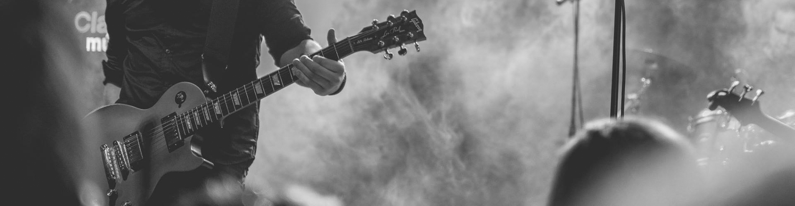
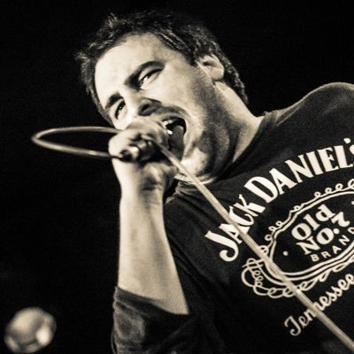
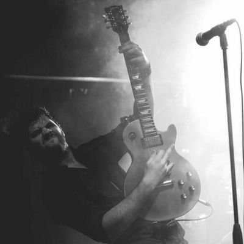
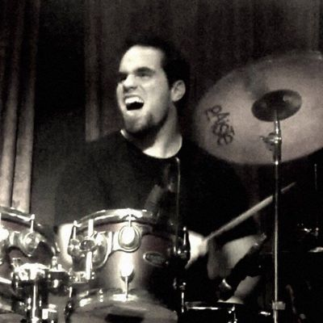
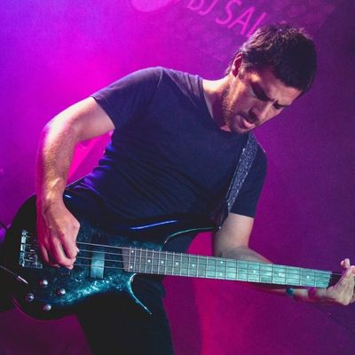

Todo comenzó cuando Maximiliano Aguiar (vocalista) se reunió con su viejo amigo de hacía 12 años Marcelo Melgar (guitarrista) a revivir un poco la música que en su momento los había hecho conversar y volverse amigos (incluso teniendo intentos de banda por aquel entonces). Tras dar con varios estilos y escuchar varios albumes de heavy y rock, llegaron al territorio de la música nacional y no hubo duda, "la chispa" que en su momento los había hecho amigos... LA TRAMPA.

BIO
Integrantes de toco y obligo

Maxi
Miembro fundador con una voz fuerte y dentro del registro de Alejandro Spuntone, lo que nos facilitó la tarea a la hora de querer realizar las piezas más complejas de la banda. Siempre saltando y con una sonrisa.

Marce
Miembro fundador con un sonido crudo y potente que combina estilos que van desde el rock clásico, al hard rock y el metal. Veloz y dinámico. Muchos dicen que no tiene una guitarra, sino una "metralleta".

Gonza
Baterista que se hace notar ya que le saca hasta el último decibel que pueda a su hermoso instrumento. Su llegada a la banda (2015) le aporto un componente de mayor potencia a todos los shows.

Mati
Desde 2014 Mati aporta esa base necesaria para que el show pueda comenzar y terminar fluyendo. Dicen que sin bajo, no hay banda, y esta no es la excepción. Acertivo y con un tono bien definido.
La chispa
Tras repasar un par de discos (de los de antes de antes, jeje) y comentar que es fue una pena cuando la banda había dejado de tocar 3 años atrás, comentaron bromeando: "che, ¿y si hacemos armamos una banda para hacer tributo y nos divertimos un rato?"
No se dijo más, desde ese momento comenzaron la búsqueda de amigos que pudieran completar la formación y tras 3 meses de ensayos realizaron su primer toque juntos. El resto es historia, fue historia. 🤘
El festejo de 3 años
A lo largo de nuestra (aún corta) vida, tuvimos varios puntos altos que nos hicieron avanzar muchos escalones (salir rapidamente del under, conseguir contrato discográfico, etc). Si tuvieramos que elegir uno par contarte, sin dudas es el toque donde celebramos los 3 años de vida de la banda. Aún siendo solamente una banda tributo, logramos por primera vez, llenar una sala mitica del país (con capacidad para 700 personas) poca veces visto para una banda de tan pocos años. No solo agotamos entradas antes, sino que también logramos que los dueños de ese recinto, conocidos por ser medios tacaños, nos ofrecieran más porcentaje de ganancias y el cierre de 2 fechas más, una para el siguiente día y otra para la siguiente semana. También agotamos.
Te dejamos un par de videos para que tomes dimensión de lo que fue y por qué fue tan increíble e inportante para nosotros.
Cada grito de esa noche quedó grabado en nuestra memoria para siempre. Tras ese mes de agosto de 2016, la banda logro despegar y conseguir su primer oferta para la grabación de un disco.
Discografía
Si bien la banda tiene 10 años, la verdad es que se ha dedicado por sobre todas las cosas, a tocar en vivo y llevar nuestra música (así como temas aún de la trampa en calidad de tributo) a todos las ciudades del País que nos fuera posible. Nuestra discografía, chica pero contundente es la siguiente:
| Album | Descripción | Año | Precio |
|---|---|---|---|
| Olvidar y soñar | Disco debut, tras 3 años de realizar tributo a la mítica banda Uruguaya de rock, La trampa. | 2017 | u$s 12 |
| La Reunión | Disco en vivo, tras 1 año de vida, reuniendo a integrantes de la banda a la que le rinden tributo. Noche emotiva en donde algunos dicen que "el diablo esta allí y apretó REC". | 2015 | u$s 10 |